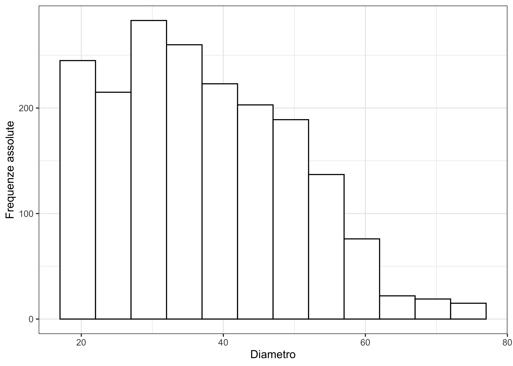
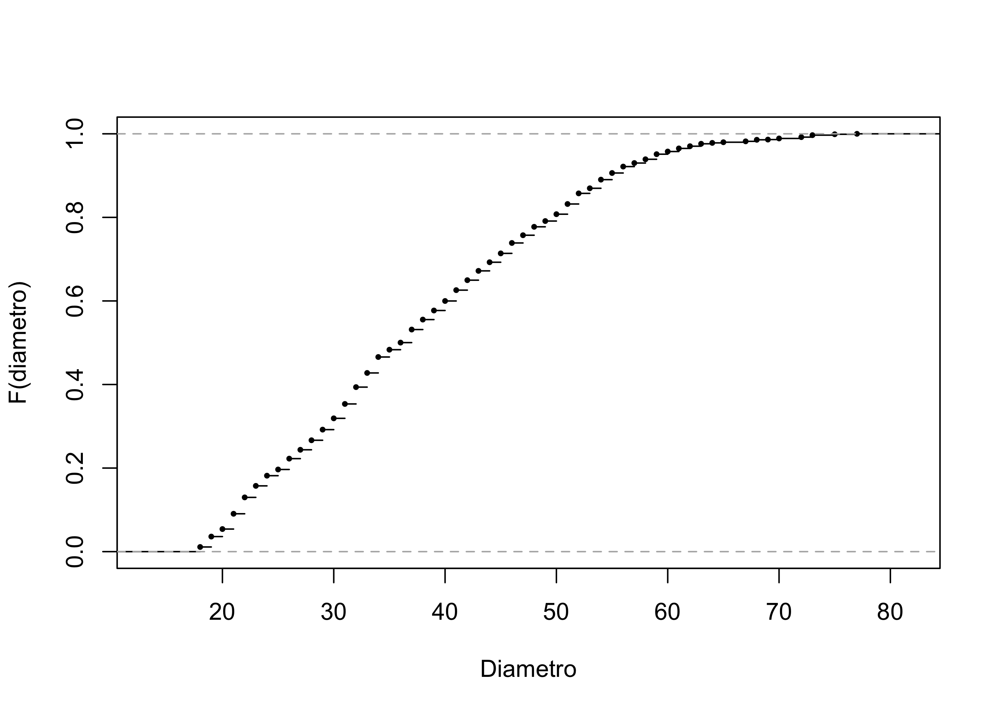
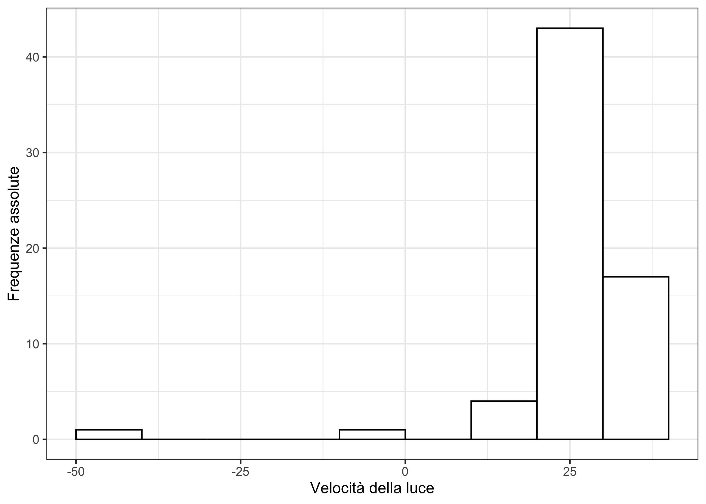
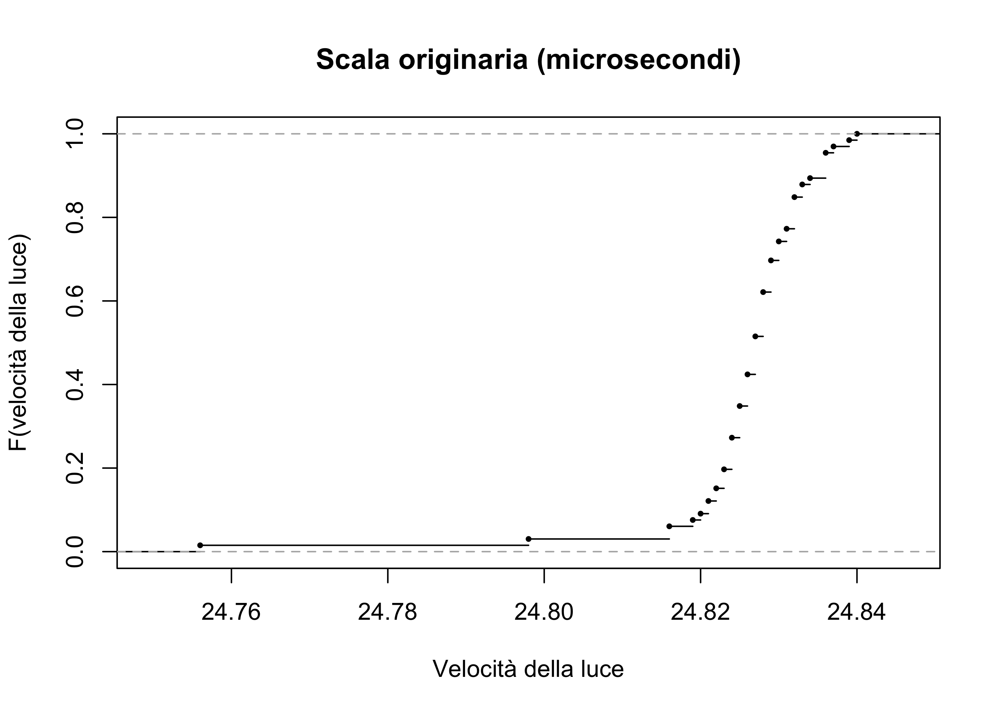
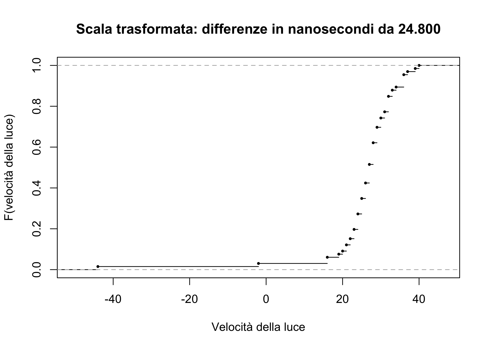

| D | \(n_j\) | D | \(n_j\) | D | \(n_j\) | D | \(n_j\) | D | \(n_j\) | D | \(n_j\) |
|---|---|---|---|---|---|---|---|---|---|---|---|
| 18 | 21 | 28 | 43 | 38 | 45 | 48 | 38 | 58 | 17 | 68 | 7 |
| 19 | 47 | 29 | 48 | 39 | 41 | 49 | 26 | 59 | 23 | 69 | 1 |
| 20 | 34 | 30 | 51 | 40 | 43 | 50 | 31 | 60 | 12 | 70 | 5 |
| 21 | 69 | 31 | 65 | 41 | 49 | 51 | 46 | 61 | 14 | 71 | 0 |
| 22 | 74 | 32 | 76 | 42 | 45 | 52 | 48 | 62 | 10 | 72 | 6 |
| 23 | 52 | 33 | 64 | 43 | 42 | 53 | 23 | 63 | 11 | 73 | 9 |
| 24 | 46 | 34 | 72 | 44 | 39 | 54 | 39 | 64 | 4 | 74 | 0 |
| 25 | 28 | 35 | 33 | 45 | 40 | 55 | 30 | 65 | 3 | 75 | 4 |
| 26 | 49 | 36 | 32 | 46 | 47 | 56 | 29 | 66 | 0 | 76 | 0 |
| 27 | 40 | 37 | 59 | 47 | 35 | 57 | 16 | 67 | 4 | 77 | 2 |
Statistica I
Esercitazione 1: distribuzioni di frequenza
Diametro degli abeti rossi
Il diametro del fusto di una pianta viene misurato attraverso uno strumento chiamato “Cavalletto”. La misura viene effettuata tenendo il cavalletto in posizione perpendicolare al fusto ad una altezza dal terreno di circa 1.30 m, con una precisione non superiore a 1 cm.
Nell’autunno del 1999 sono stati misurati i diametri di n = 1887 abeti rossi presenti in una zona boschiva a San Vito di Cadore. Le misure sono elencante nella tabella seguente, in cui D = Diametro, \(n_j\) = frequenze assolute.
Domande
Qual è l’unità statistica di questo problema? Qual è la numerosità campionaria?
Per i dati riferiti al diametro del fusto si è soliti sintetizzare l’informazione in classi di 5 cm. Si costruisca tale tabella, usando pertanto gli intervalli \((17, 22], (22,27], \dots, (72,77]\). Si ottengano quindi: i) le frequenze assolute, ii) le frequenze relative, iii)-iv) le frequenze cumulate assolute e relative.
Si disegni l’istogramma dei dati utilizzando gli intervalli del punto precedente.
Si faccia un disegno (anche approssimativo) della funzione di ripartizione.
Quanto vale la funzione di ripartizione calcolata in \(52\), ovvero \(F(52)\)?
Quanti sono gli alberi aventi diametro più piccolo di \(42.5\) cm?
Schema della soluzione
Le tabelle ed i grafici che seguono sono un supporto alla soluzione e non costituiscono la soluzione completa.
| Classe | Frequenze assolute | Frequenze relative | Frequenze cumulate assolute | Frequenze cumulate relative |
|---|---|---|---|---|
| (17,22] | 245 | 0.130 | 245 | 0.130 |
| (22,27] | 215 | 0.114 | 460 | 0.244 |
| (27,32] | 283 | 0.150 | 743 | 0.394 |
| (32,37] | 260 | 0.138 | 1003 | 0.532 |
| (37,42] | 223 | 0.118 | 1226 | 0.650 |
| (42,47] | 203 | 0.108 | 1429 | 0.757 |
| (47,52] | 189 | 0.100 | 1618 | 0.857 |
| (52,57] | 137 | 0.073 | 1755 | 0.930 |
| (57,62] | 76 | 0.040 | 1831 | 0.970 |
| (62,67] | 22 | 0.012 | 1853 | 0.982 |
| (67,72] | 19 | 0.010 | 1872 | 0.992 |
| (72,77] | 15 | 0.008 | 1887 | 1.000 |


La velocità della luce
Simon Newcomb ha misurato nel 1882 la velocità della luce. Nello specifico, Newcomb ha misurato il tempo necessario alla luce per percorrere una distanza di 7442 metri. Newcomb ha ripetuto l’esperimento n = 66 volte.
Dati Newcomb
I dati \(x_1,\dots,x_{66}\) rappresentano le misurazioni della velocità della luce espresse in microsecondi. I dati sono elencanti qui di seguito, raggruppati in colonne per semplicità espositiva.
| 1 | 2 | 3 | 4 | 5 | 6 |
|---|---|---|---|---|---|
| 24.828 | 24.822 | 24.836 | 24.826 | 24.828 | 24.828 |
| 24.826 | 24.824 | 24.832 | 24.830 | 24.827 | 24.824 |
| 24.833 | 24.821 | 24.836 | 24.832 | 24.831 | 24.825 |
| 24.824 | 24.825 | 24.828 | 24.836 | 24.827 | 24.832 |
| 24.834 | 24.830 | 24.825 | 24.826 | 24.826 | 24.825 |
| 24.756 | 24.823 | 24.821 | 24.830 | 24.833 | 24.829 |
| 24.827 | 24.829 | 24.828 | 24.822 | 24.826 | 24.827 |
| 24.816 | 24.831 | 24.829 | 24.836 | 24.832 | 24.828 |
| 24.840 | 24.819 | 24.837 | 24.823 | 24.832 | 24.829 |
| 24.798 | 24.824 | 24.825 | 24.827 | 24.824 | 24.816 |
| 24.829 | 24.820 | 24.828 | 24.827 | 24.839 | 24.823 |
Risulta comodo cambiare la scale dei dati, per semplificarne la loro analisi. In particolare, consideriamo le differenze da \(24.8\) microsecondi ed esprimiamo queste deviazioni in nanosecondi. In simboli, vogliamo ottenere
\[y_i= 1000 \times (x_i - 24.8), \qquad i=1,\dots,66.\] I dati \(y_1,\dots,y_{66}\) espressi nella scala trasformata sono quindi pari a:
| 1 | 2 | 3 | 4 | 5 | 6 |
|---|---|---|---|---|---|
| 28 | 22 | 36 | 26 | 28 | 28 |
| 26 | 24 | 32 | 30 | 27 | 24 |
| 33 | 21 | 36 | 32 | 31 | 25 |
| 24 | 25 | 28 | 36 | 27 | 32 |
| 34 | 30 | 25 | 26 | 26 | 25 |
| -44 | 23 | 21 | 30 | 33 | 29 |
| 27 | 29 | 28 | 22 | 26 | 27 |
| 16 | 31 | 29 | 36 | 32 | 28 |
| 40 | 19 | 37 | 23 | 32 | 29 |
| -2 | 24 | 25 | 27 | 24 | 16 |
| 29 | 20 | 28 | 27 | 39 | 23 |
Curiosità. Sulla base delle recenti misurazioni, il “vero valore” della velocità della luce nella scala trasformata è \(33.0\).
Domande
Si ottenga il minimo ed il massimo delle misurazioni di Newcomb nella scala trasformata \(y_1,\dots,y_{66}\).
Si costruisca una tabella per la scala trasformata, utilizzando gli intervalli \((-50, -40], (-40,-30], \dots, (30,40]\). Si ottengano quindi: i) le frequenze assolute, ii) le frequenze relative, iii)-iv) le frequenze cumulate assolute e relative.
Nella scala trasformata, si calcoli la frazione di misurazioni contemporaneamente maggiore di \(20\) e minore o uguale di \(30\).
Nella scala trasformata, si ottenga un istogramma usando gli intervalli \((-50, -40], (-40,-30], \dots, (30,40]\).
Si ottenga un grafico approssimativo della funzione di ripartizione nella scala originale ed in quella trasformata. Si commentino i risultati.
Schema della soluzione
Le tabelle ed i grafici che seguono sono un supporto alla soluzione e non costituiscono la soluzione completa.
Minimo e massimo
Il minimo vale -44, il massimo vale 40.
Tabelle e grafici
| Classe | Frequenze assolute | Frequenze relative | Frequenze cumulate assolute | Frequenze cumulate relative |
|---|---|---|---|---|
| (-50,-40] | 1 | 0.015 | 1 | 0.015 |
| (-40,-30] | 0 | 0.000 | 1 | 0.015 |
| (-30,-20] | 0 | 0.000 | 1 | 0.015 |
| (-20,-10] | 0 | 0.000 | 1 | 0.015 |
| (-10,0] | 1 | 0.015 | 2 | 0.030 |
| (0,10] | 0 | 0.000 | 2 | 0.030 |
| (10,20] | 4 | 0.061 | 6 | 0.091 |
| (20,30] | 43 | 0.652 | 49 | 0.742 |
| (30,40] | 17 | 0.258 | 66 | 1.000 |


